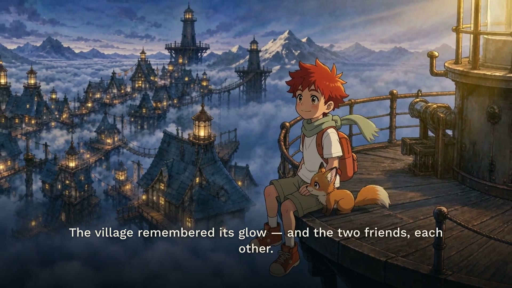

This is the exact workflow behind The Last Lantern — how the characters stayed on-model for 45 straight seconds, how every prompt was structured, and how the whole thing became a single professional page instead of a pile of MP4s in a chat. Take the downloads. Rebuild it yourself.
Get the skill + prompt pack See the HTML method
You already make strong images and clips. But look at where the hours actually go:
And the worst part isn't the hours. It's that after all that work, your output looks like attempts — not a finished piece with a storyboard, a world, and a page of its own. Here's the thing: both leaks have the same fix.
Nothing advances until it passes a continuity check against the locked references. Slower for an hour, faster for a week.
| Stage | Tool / Skill | What it does here |
|---|---|---|
| Keyframes & sheets | GPT Image 2 | 2K stills; accepts multiple reference images so identity never drifts; batch 2–4 variations per shot and pick. |
| Animation | Seedance 2.0 | 15s clips with 4 timestamped hard cuts per generation; start-image = your approved keyframe; native diegetic audio. |
| Voiceover | any TTS voice | Six narration lines generated as separate clips, placed at exact timestamps. |
| Edit & mix | ffmpeg | Concat sequences, sidechain-duck sound under VO, burn captions, export web-ready masters. |
| Presentation | html-effectiveness download below | A Claude skill: instead of markdown or chat dumps, Claude writes one polished self-contained .html file. This page and the film page were both built with it. |
| Publishing | GitHub Pages | git push + enable Pages = a permanent shareable link. No hosting bill, no build step. |
Every prompt in the project is assembled from stable layers. Write the layer once, reuse it everywhere — that's what consistency actually is. Copy any block.
[1 STYLE PREFIX] locked art direction — medium, linework, palette, mood.
Written once. Pasted verbatim into all 12 keyframes.
[2 IDENTITY BLOCKS] one block per character/prop, repeated word-for-word:
"Kai: cheerful ~10yo boy, spiky red-orange hair, sage scarf,
khaki shorts, orange hi-tops, burnt-orange backpack."
Text backs up the reference images; together they pin identity.
[3 PANEL INSERT] the only part that changes per shot: ONE clear action,
framing, the camera move this frame must support, light state.
[4 NEGATIVES] "no text, no captions, no borders, no logos, no motion blur."
+ ATTACHED MEDIA the same 4 reference images on every call:
char sheet A · char sheet B · environment sheet · prop sheet[VIDEO TYPE: Cinematic epic, hand-painted 2D animated feature film.
15-second sequence, 4 hard cuts.]
[CAMERA:
00:00-00:04 <shot 1 — one action, one camera move>. Hard cut.
00:04-00:08 <shot 2>. Hard cut.
00:08-00:11 <shot 3>. Match-on-motion cut.
00:11-00:15 <shot 4 — keep motion alive through the final frame>.]
[SUBJECT: identity blocks again, "both exactly on-model".]
[SFX: specific physical sounds per beat, escalating. No music.]
MEDIA: --start-image <approved keyframe>
--image <char A> <char B> <environment> <prop>
SETTINGS: 15s · 16:9 · fast mode to preview → std 1080p for the final1 TITLE + TAGLINE 2 EXECUTIVE OVERVIEW — what this is and why it matters 3 CONTEXT & GENESIS — the challenge, audience, constraints 4 CONCEPT ESSENCE — the governing metaphor in one paragraph 5 CANONICAL REFERENCES — immutable IDs (@Image1 char A … @Image4 prop) 6 CHARACTER FIDELITY BIBLE — what must NEVER change 7 WORLD BIBLE — geography (fix a left-to-right route), materials, light logic 8 PROP / MECHANISM BIBLE — how the hero object works, step by step 9 STRUCTURAL FRAMEWORK — shot list with timecodes (12 shots / 3×15s) 10 CAMERA LANGUAGE — one purposeful move per shot 11 SOUND DESIGN — diegetic-only in generation; score in post 12 CONTINUITY LEDGER — invariants audited after every generation 13 FAILURE RECOVERY — what to do when identity/world/prop drifts 14 ACCEPTANCE CRITERIA — the checklist that defines done 15 QUICK-START CONTEXT STRING — "We're building [X]: [function, feeling, goal]."
The full working prompts — environment sheet, prop sheet, all three Seedance sequences, the VO script — are in the prompt pack below, as plain text files you can adapt line by line.
The film page is one self-contained index.html — inline CSS and JS, zero frameworks, zero CDNs — plus a folder of web-optimized media. Here's its exact anatomy and the rules that make it feel professional.
<video> src and preserve the timestamp — four cuts of the film, one player, no page weight.loading="lazy"; click opens the 1600px original. Page stays fast.+faststart so streaming starts instantly; images ≤1600px JPEG.<!doctype html><html><head>
<meta charset="utf-8"><meta name="viewport" content="width=device-width,initial-scale=1">
<title>Your Film</title>
<meta property="og:image" content="assets/img/og.jpg"> <!-- 1200x630 -->
<style> /* ALL css inline: tokens in :root, then sections */ </style>
</head><body>
<nav>…sticky anchors…</nav>
<header> kicker · serif title · logline · chips
<video controls poster="assets/img/poster.jpg">
<source id="src" src="assets/video/film.mp4"></video>
<div id="tabs">…buttons with data-src…</div>
</header>
<section id="story">…</section>
<section id="storyboard"><div id="grid"></div></section>
<section id="prompts">…<details> blocks…</section>
<script>
const PANELS=[[1,"0:00–0:04","Title","Move","Frame","Action"],…];
// render grid from PANELS · tab click swaps #src · lightbox · copy buttons
</script>
</body></html>
// publish: git init && git add -A && git commit -m ship
// gh repo create you/project --public --source=. --push
// gh api -X POST repos/you/project/pages -f source[branch]=master -f source[path]=/Truth is, you don't have to hand-build any of this. The html-effectiveness skill below teaches Claude these exact habits — one file, real density, SVG diagrams, copy buttons — so you just describe the page and review it.
Three files. Install the skill, study the prompts, follow the guide — you're running the same setup I am.
The Claude skill that builds pages like this one. Unzip into ~/.claude/skills/ and ask Claude for anything "as an HTML file." INSTALL.txt included.
The working prompts: environment sheet, prop sheet, keyframe layer template, all three Seedance multishot sequences, the VO script, and the master-brief skeleton.
Download the promptsThe seven phases as a checklist — reference locking, batching, continuity gates, preview-before-final — everything on this page in a file you can follow.
Download the guidehtml-effectiveness into ~/.claude/skills/ — Claude now builds single-file pages on request.git push, enable GitHub Pages — and share one link instead of twelve attachments.Watch the result, then open the downloads and build the version only you would make. When you ship yours, post the link — one link — and watch how differently people treat your work.
▶ Watch The Last Lantern Grab the downloads